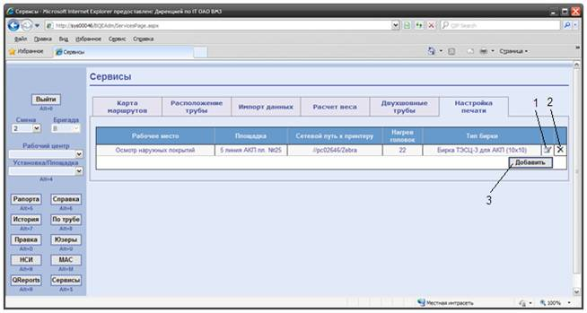
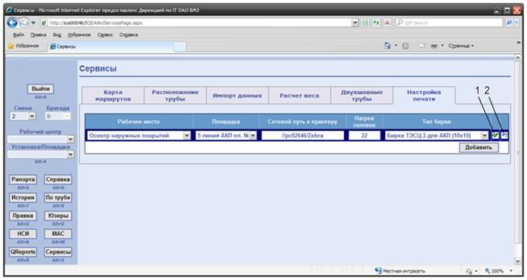

Настройка
печати бирок в ДМАП ТЭКСК ТБД
Перед
использованием в ДМАП принтера, необходимо обеспечить сетевой доступ к нему и
разрешить печать для доменного пользователя d0\SysDMAP_print.
Для выполнения описанных ниже действий необходимо обладать правами администратора ДМАП ТЭСК ТБД.
Просмотр настроек печати бирок производится на web-форме «Сервисы» во вкладке «Настройка печати», внешний вид которой представлен на рисунке 1:

Рисунок 1
– скриншот web-формы «Сервисы»
1) кнопка
«редактировать»; 2) кнопка «удалить»; 3) кнопка «добавить»
Для того, чтобы изменить настройку печати на каком-либо рабочем месте необходимо нажать на кнопку «редактировать» (рис . 1-1), после того как форма перейдёт в режим редактирования (рис. 2) - указать рабочее место, площадку, сетевой путь к принтеру, нагрев головок по умолчанию, а также тип бирки, после чего нажать кнопку «сохранить» (рис. 2-1). Для отмены изменений нажать кнопку «отменить» (рис. 2-2).

Рисунок 2
– скриншот web-формы «Сервисы»
1) кнопка «сохранить»; 2) кнопка «отменить»
При необходимости ремонта\обслужиния принтера на рабочем месте (местах) нужно предварительно, на время ремонта, изменить сетевой путь к принтеру, на который будет производится печать этикеток. При поступлении звонка о неисправности принтера выяснить у пользователя на каакую площадку нужно сделать перенаправление печати (адрес принтера можно узнать косвенно по рабочему месту и площадке). По окончании ремонта восстановить сетевой путь к принтеру.